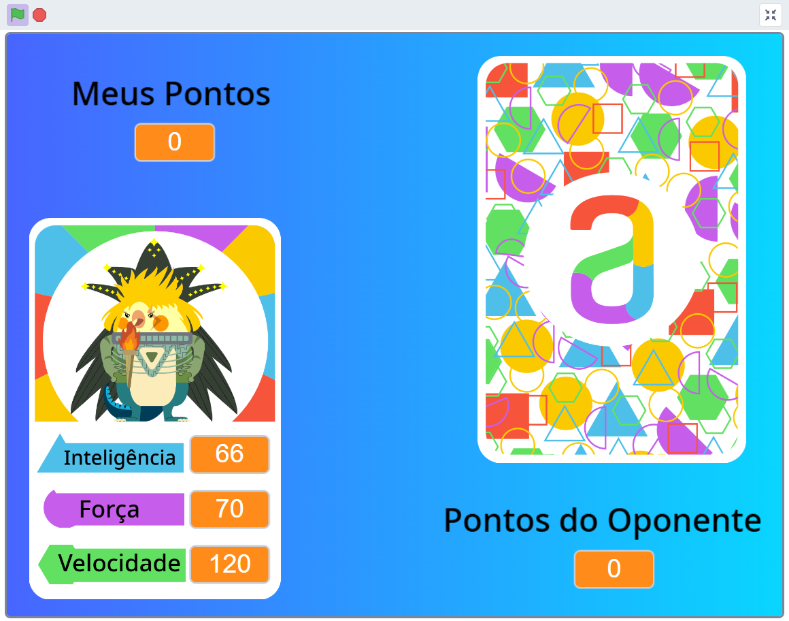
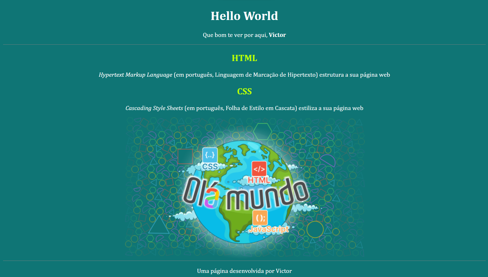
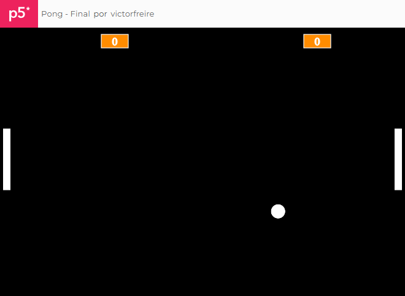

Meus projetos

Super Trunfo - Scratch
Este foi um dos projetos desenvolvido junto aos alunos do Novo Ensino Médio em 2024, na disciplina de Tecnologia e Robótica, em parceria com a Alura.

Hello World! Uma introdução às possibilidades com HTML, CSS e JavaScript
Este projeto é uma demonstração das possibilidades que temos ao mesclar as linguagens HTML, CSS e JavaScript para o desenvolvimento de páginas web

Pong: o precursor dos vídeogames como ferramenta de estudo para programação.
O projeto é uma aplicação interativa da linguagem JavaScript atrelado à uma das diversas bibliotecas adicionais disponíveis para o P5.JS